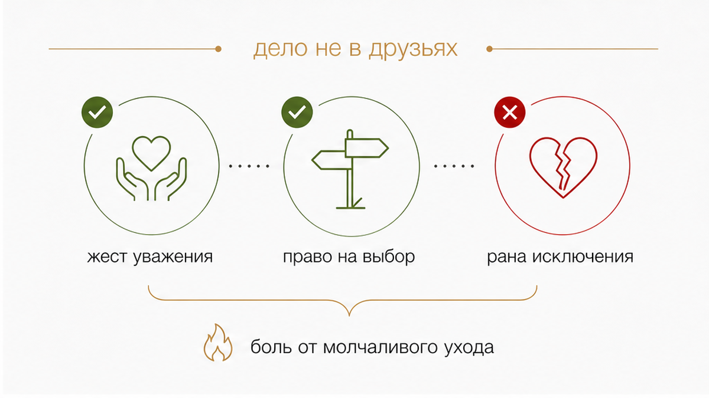
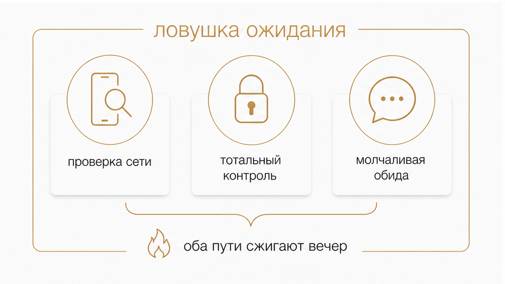
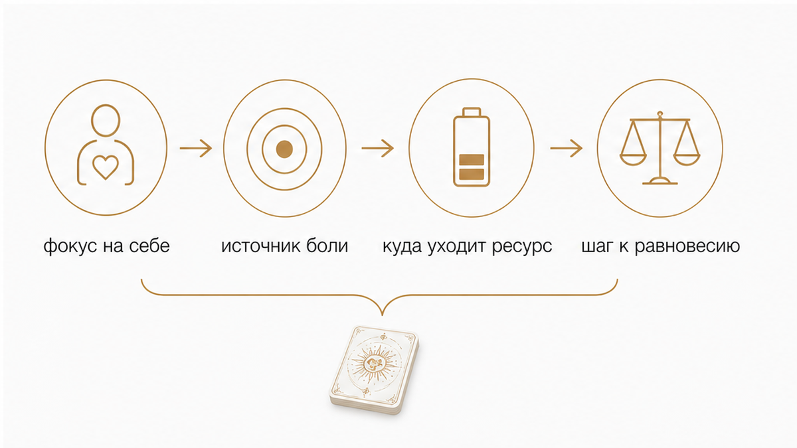

Виктория - таролог команды «ТАРО СЕЙЧАС»
Хлопнула входная дверь, дважды повернулся ключ в замке, и в прихожей повисла глухая тишина. Он собрался за пять минут: накинул куртку, бросил короткое «я к ребятам» и ушёл, даже не спросив про твои планы на вечер. Тебя с собой он не позвал. На экране телефона пустота, вечер повис в воздухе, а внутри поднимается острая обида.
Самое тяжёлое в этот момент — ощущение внезапной выключенности. Вы в отношениях, но в эту субботу о твоём существовании будто забыли. Рука тянется к телефону: написать едкое сообщение, потребовать объяснений или молча проглотить ком в горле?
Карты не работают скрытой камерой и не шпионят за чужими разговорами. Но они моментально подсвечивают твою слепую зону: почему эта ситуация так больно задела, где ты предаёшь себя и как вернуть управление своим состоянием.
Если внутри всё кипит и ясность нужна прямо сейчас:

Корень боли здесь почти никогда не связан с самой прогулкой. Редко кому искренне хочется часами слушать мужские разговоры про автомобили, работу или школьные воспоминания. Ранит другое: «Я бы, скорее всего, и сама отказалась, но почему меня даже не спросили?»
Приглашение — это базовый жест уважения и признания. Когда мужчина зовёт тебя с собой, он оставляет за тобой выбор и показывает: твоё присутствие ценно. Когда он уходит молча, решив всё в одиночку, он лишает тебя этого выбора. И если это встреча не с большой компанией, а с одним другом, укол ощущается ещё сильнее: для друга время нашлось, а ты осталась за порогом.

Оставшись в пустой квартире, легко провалиться в изнуряющий внутренний монолог. Ты начинаешь поминутно проверять время его последнего визита в сеть, гадать, где он находится, и ставить собственную жизнь на паузу.
В этой точке женщины обычно сваливаются в одну из двух крайностей:
Оба пути ведут в тупик, потому что в обоих случаях ты отдаёшь свой вечер в заложники чужому настроению.

Главная задача сейчас — перестать контролировать чужие перемещения и вернуть фокус на себя. Карты Таро не предназначены для того, чтобы заглядывать в чужую голову с вопросами «о ком он думает» или «во сколько вернётся». Их сила — в трезвой оценке того, что происходит с тобой.
Вот три вопроса, которые возвращают ясность:
Право на время порознь есть у каждого. Отдельные встречи с друзьями, свои увлечения и личные границы — естественная часть зрелых отношений. Но между здоровой автономией и холодным пренебрежением есть чёткая грань.
Зрелые границы строятся на открытости: партнёр предупреждает о планах заранее, интересуется твоим состоянием и не закрывает свой круг общения наглухо. Пренебрежение выглядит иначе: решения систематически принимаются за твоей спиной, любой интерес встречается раздражением, а твои чувства обесцениваются фразой «ты вечно всё выдумываешь».
Не пытайся выяснять отношения у порога в два часа ночи, когда он вернётся домой. Разговор о границах и договорённостях имеет смысл только на следующий день — на спокойную голову, из точки внутренней опоры, а не из острой обиды.
Твоя жизнь не должна замирать в ту секунду, когда захлопнулась входная дверь. Этот вечер целиком принадлежит тебе. Только ты решаешь, чем его наполнить — бессмысленным обновлением чужих статусов или заботой о себе.
Переключи внимание с его фигуры на свои потребности. Приготовь вкусный ужин, включи фильм, до которого не доходили руки, позвони близкой подруге или просто выспись в тишине. Когда ты наполняешь собственное время содержанием, твоя ценность возрастает в первую очередь для тебя самой.
Не позволяй единичному вечеру без приглашения разрушить твою самооценку и поставить под сомнение отношения. Когда ты понимаешь скрытые мотивы партнёра и ясно держишь свои границы, пропадает необходимость гадать на кофейной гуще и изводить себя тревожными домыслами.
Расставь точки над «i» и верни себе душевный покой: